How to use this module
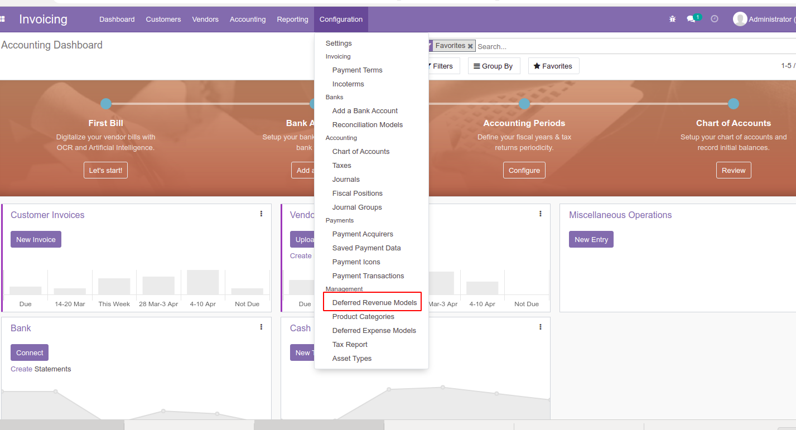
After installing this module, in the configuration menu, you can see Deferred Revenue Models menu
for configuring the Revenue accounts.
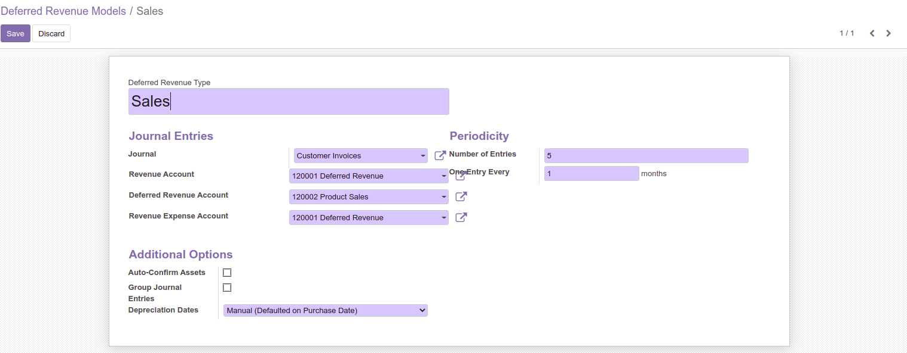
Here, Revenue account can be configured. Number of entries can be specified and based on that the entries
will be generated in the revenue board.
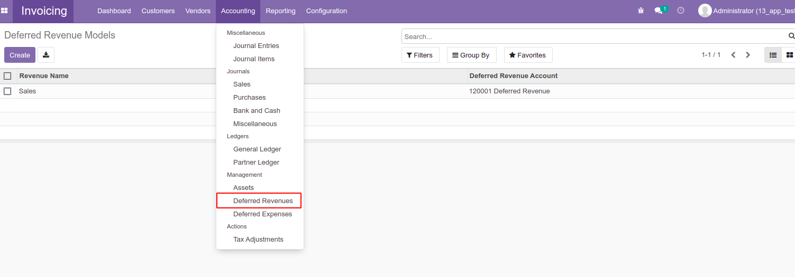
In Accounting menu, click on the Deferred Revenues menu.
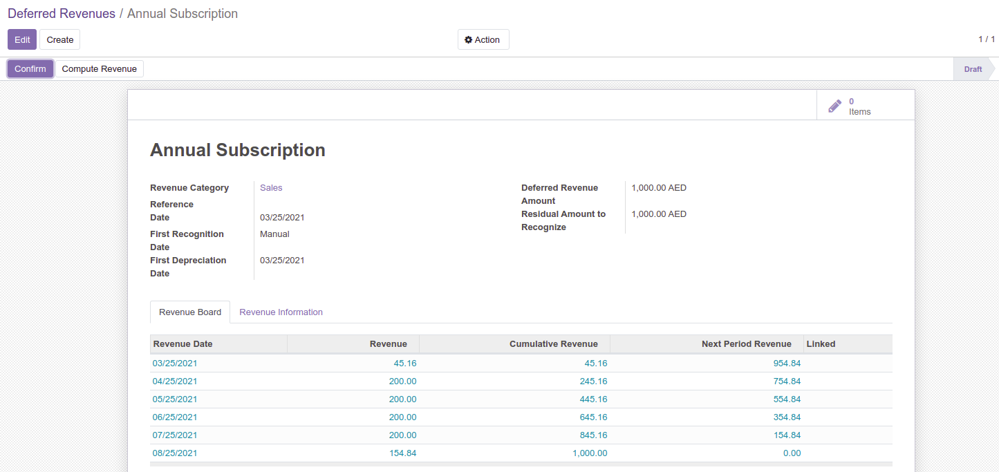
Revenue Board will be displayed based on the revenue amount and the number of entries
defines in the revenue configuration type.
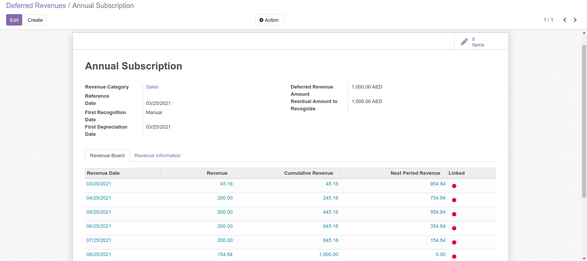
After clicking on the confirm button, state will be changed to running state.
Items to be posted qill be appeared in the revenue board.
After clicking on the confirm button, state will be changed to running state.
Items to be posted qill be appeared in the revenue board.
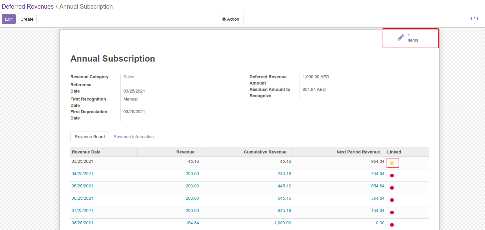
Items can be posted, one by one and the respective journal entries will be created.
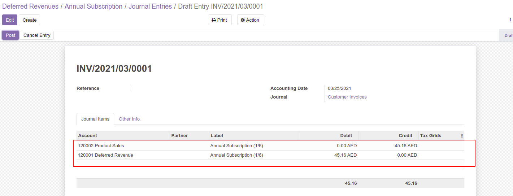
Journal Entries are created based on accounts specified in the configuration.
By clicking on post the entries will be posted.
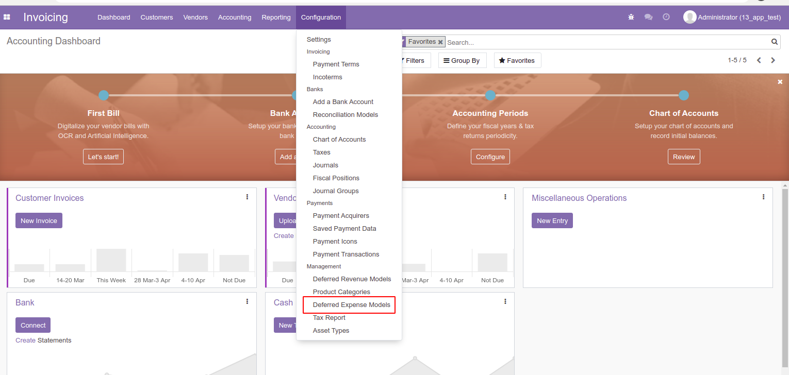
Similar to Deferred Revenues we also have Deferred Expenses. You can see the
Deferred Expense Models menu in the configuration.
Similar to Deferred Revenues we also have Deferred Expenses. You can see the
Deferred Expense Models menu in the configuration.
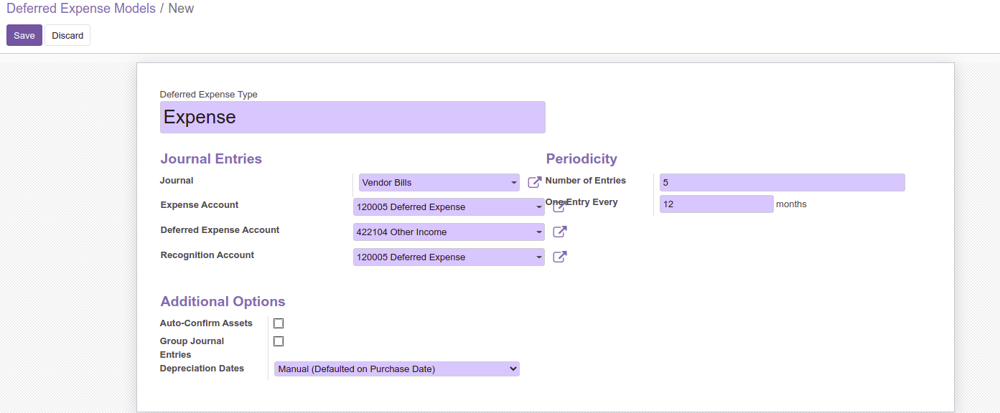
Expense Types can be configured by adding the required fields, Deferred Expense Account,
Number of Entries and so on.
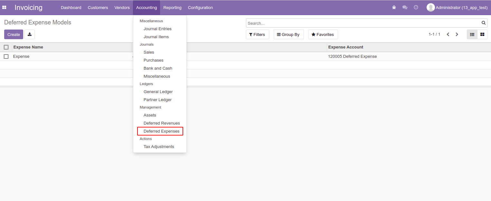
From Accounting menu click Deferred Expenses
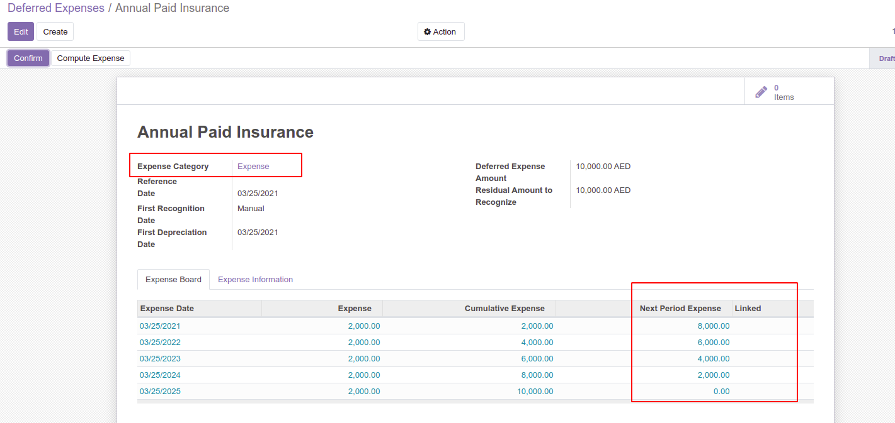
In Expense Form expense category is derived from the expense type configuration.
Based on the number of entries, the amount is split ed in the expense board.
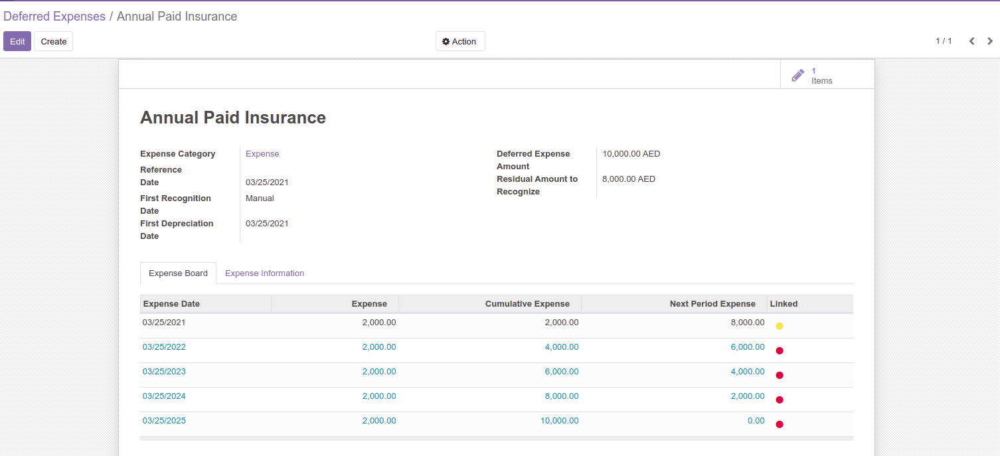
By confirming , you can see the button to be posted. By clicking on each entries ,
the journal entries will be generated.
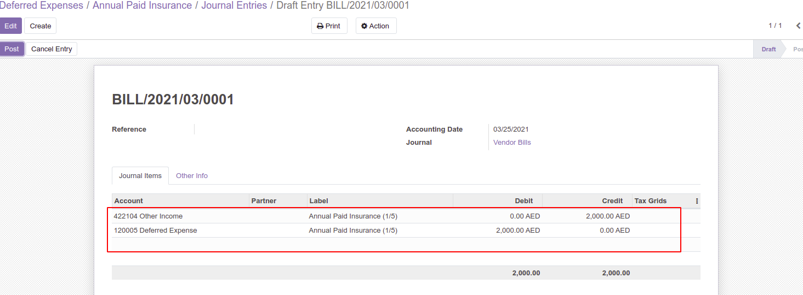
As seen in the above image, related journal entries are created.